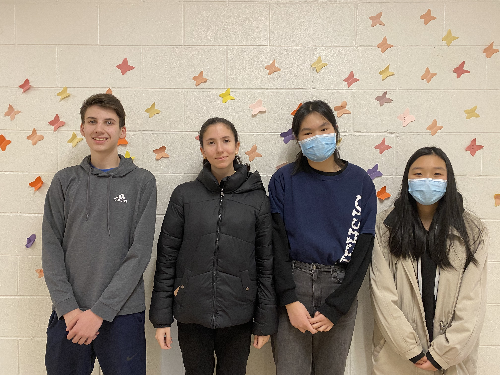
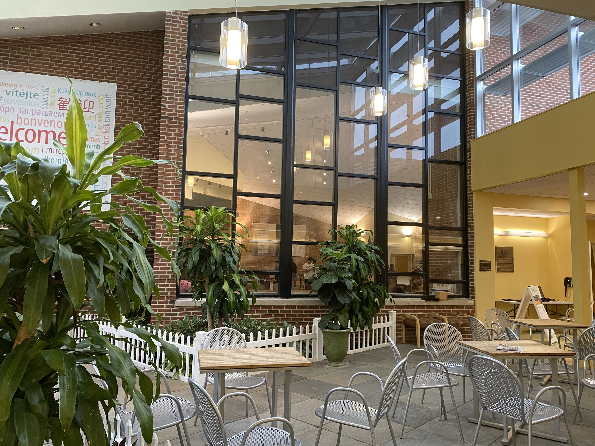
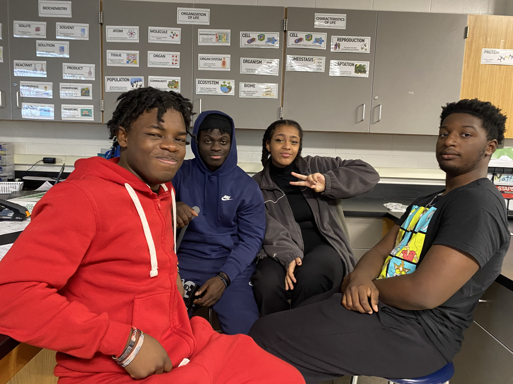
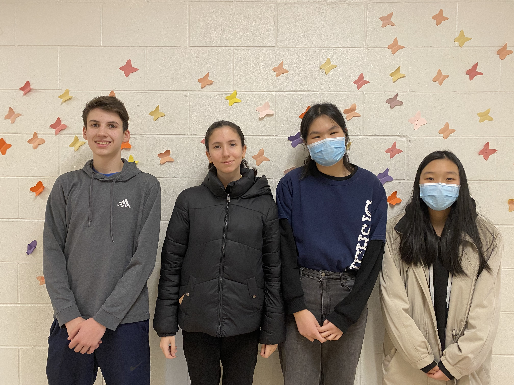
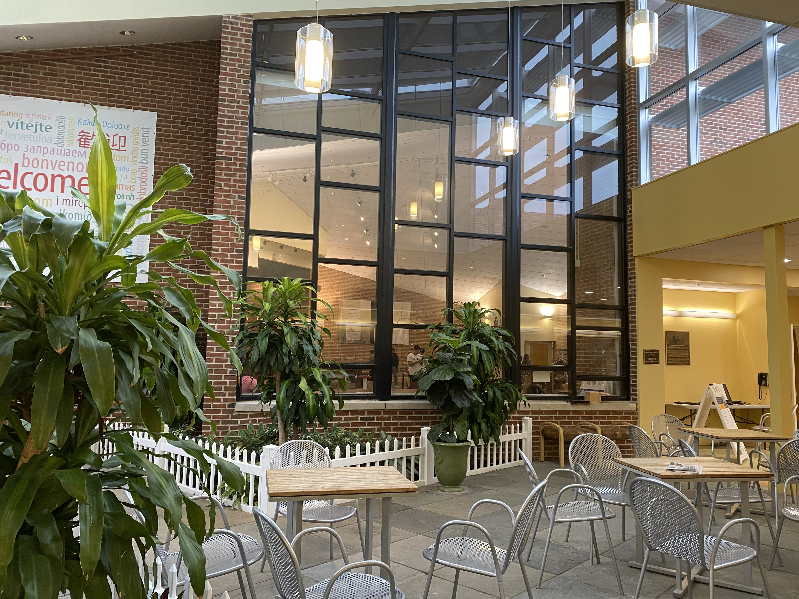
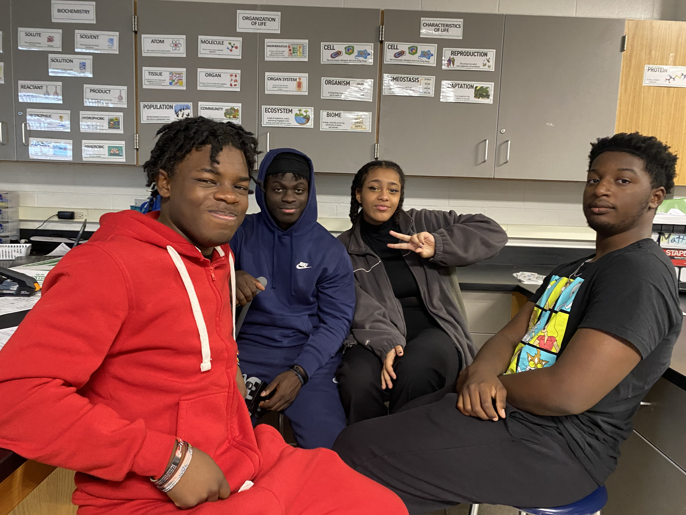
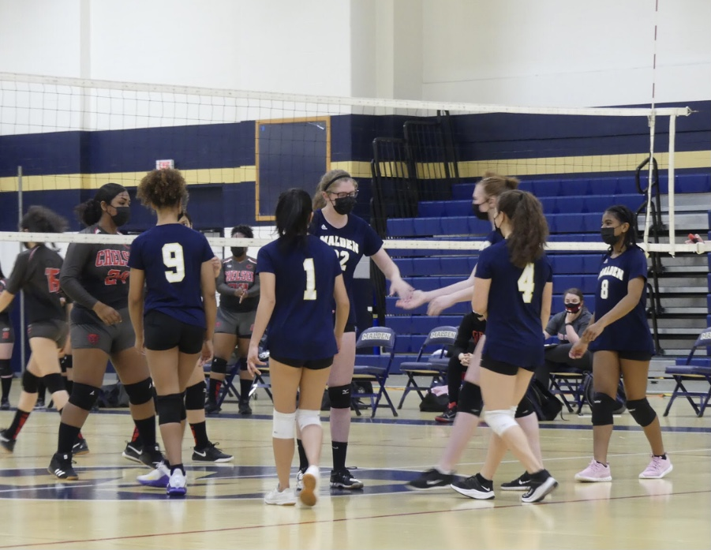
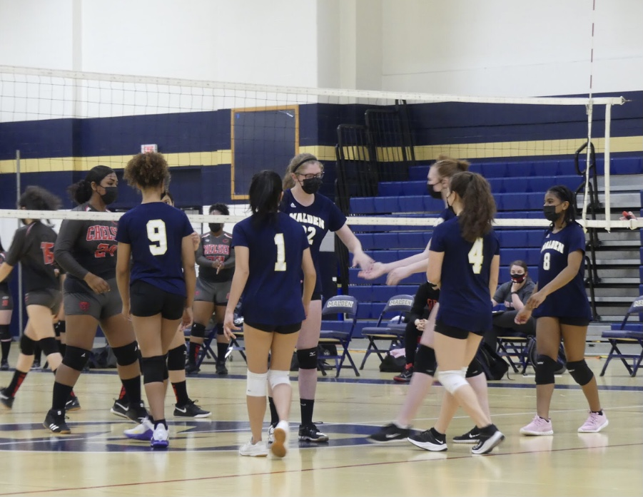

During my freshman year, I decided to take on this unique story which was quite far from my usual ally of Local stories. Though I think I did a great job I do wish that over the years I had pursued more political pieces in the hopes of improving my skills in political writing and reporting.
For my first editorial, I wrote about the struggles of being a senior, desperately awaiting the moment that you can step onto the stage and finally receive your diploma. As a senior, I felt as though may people would enjoy reading this and would relate to my thoughts. Though this editorial was good I feel as though I have much room to improve this year.
Last year, I was assigned the most prestigious article to write, which is generally given to the best upperclassmen writers, in which they can cover the Valedictorian, Salutatorian or Orator. In my case, I was assigned the Valedictorian profile which I believe I did a great job with, as Ryan’s personality and soul were truly able to shine through with my writing.
During my freshman year, I decided to try something new instead of just writing an article like I usually do, so I decided to record a simple video of the Malden High School swim team to showcase one of their meets. Though I feel as though the video could’ve been better I think that I did a great job considering it was my first time, and that I had limited resources as it was the first year during COVID.


 






 
